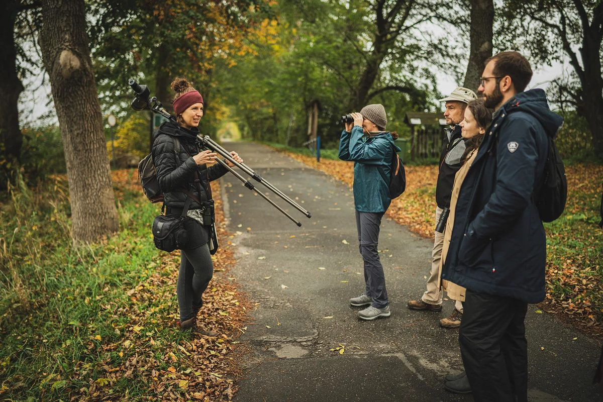

Z Zuzą
Uważnej obserwacji przyrody
Dolina Baryczy jesienią to jedno z najbardziej niezwykłych miejsc w Polsce — ciągnące klucze żurawi, mgły nad stawami, jelenie na rykowisku. Zuza pokaże Wam to, czego sami byście nie zauważyli. To nie są typowe wycieczki turystyczne — to nauka patrzenia.